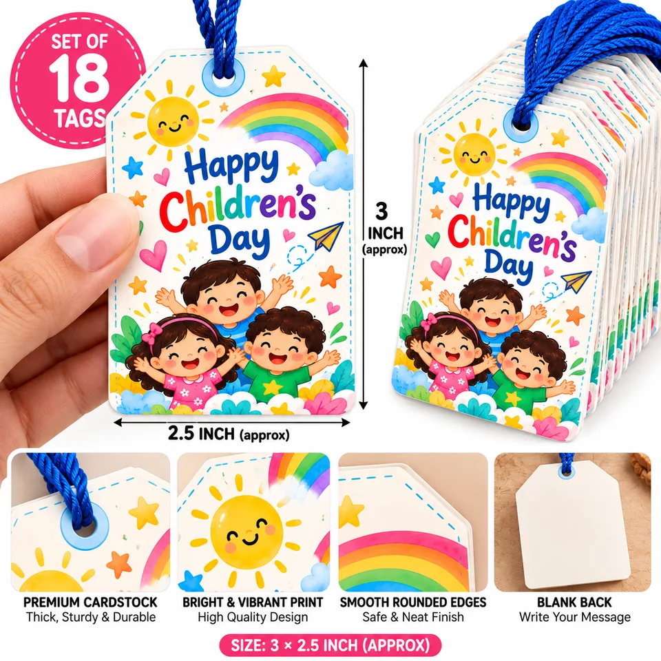
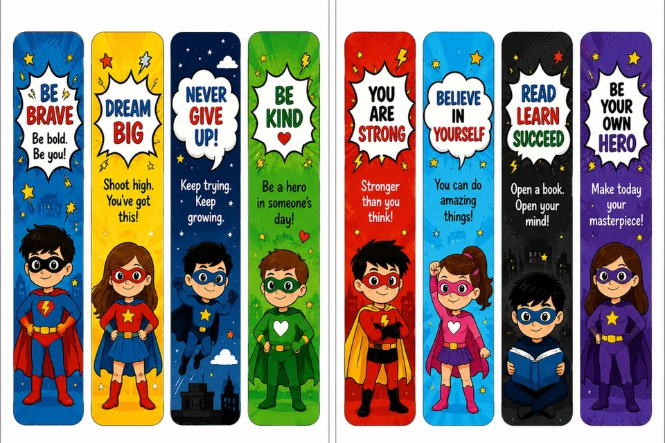
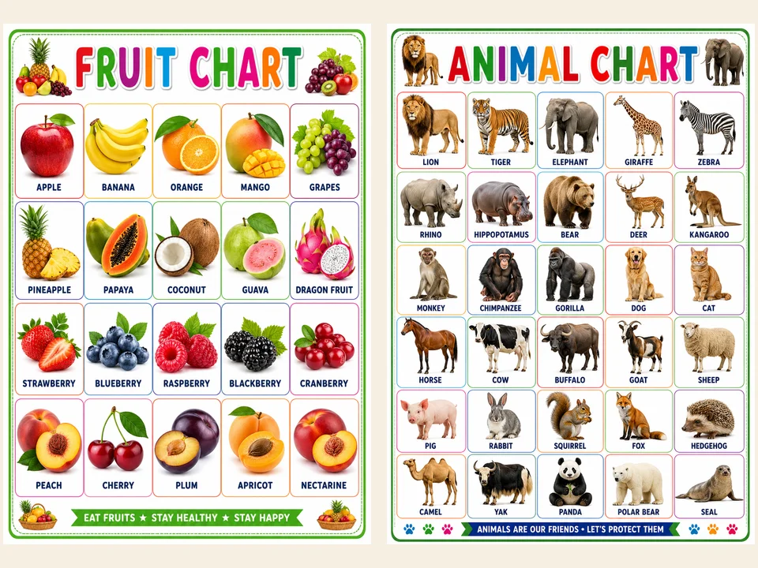

Children's Day Gift Ideas for Students from Teachers and Parents
Buying for a whole class means the gift has to be cheerful, useful and affordable in bulk. Here are six printed ideas we make in Goa and deliver across India, usually within 5 to 6 days, so order by early November.
1. Happy Children's Day gift tags
Tie a bright tag to a chocolate, a pencil pouch or a small toy and every child gets a gift that feels made for them. Our set of 18 tags measures 3 by 2.5 inches and is printed on premium cardstock.

2. Superhero bookmarks that cheer them on
Eight superhero designs with messages like Be Brave, Dream Big and Be Your Own Hero. Kids use them every day, so the message keeps working long after the party.

3. Quote bookmarks for older students
For middle and high school classes, bookmarks with quotes on learning by Nelson Mandela, B.B. King and W.B. Yeats feel grown up without being boring.
4. Learning charts for little ones
For playschool and kindergarten, a fruit or animal chart is a gift the child and the parents both use at home.

5. Thank You stickers for goodie bags
Seal party bags and return gift boxes with colourful round stickers. A pack of 12 is enough for a small class celebration.

6. Personalised return gifts
Want every child's name on their gift, or your school's name on the tag? We design custom tags, bookmarks and return gifts for schools, tuition classes and parents' groups, in any quantity.
Ordering for a whole class or school?
Tell us how many children and what you have in mind, and we will send you a price. Bulk and personalised orders take about 5 to 6 days to reach you anywhere in India.
Order on WhatsApp Shop on AmazonAlso see our 7 personalised Diwali gift ideas.